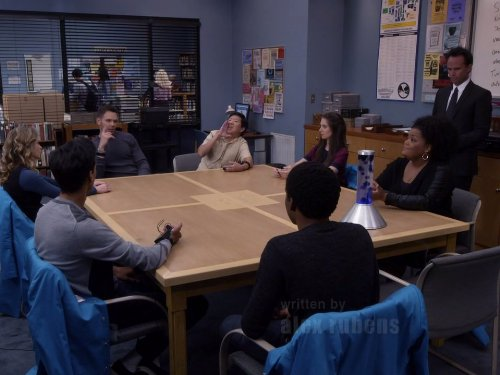

My personal favourite episodes in no particular order
Remedial Chaos Theory (Season 3, episode 4)
Widely regarded as one of the best episodes, it is set around the house-warming party for Troy and Abed's new apartment. When nobody wants to be the one to go downstairs to get the pizza delivery, Jeff decides to roll a die to determine who goes to collect it. We then see what would happen for each different die result and how that affects the group. The episode's representation of multiple parallel worlds coming from a singular event that it was nominated for a Hugo award.
A Fistful of Paintball and For a Few Paintballs More (Season 2, episodes 23 and 24)
The Two part finale of season 2 and two of the many paintball focussed episodes that happened throughout the series. The first part is a parody of spaghetti westerns, as implied by the name, but the second part takes on more of a Star wars feel as everyone has to work together to save the school from an external threat. I could have had many paintball episodes on this list, as every time they commit very hard to the premise, even though the school is brought very close to destruction every time it happens.
Critical Film Theory (season 2, episode 19)
Jeff has organised a Pulp Fiction themed party for Abed's birthday, but learns over a dinner that Abed has invited to that he is done with his obsession with pop culture. A very fun episode with many different film references, both with the Pulp Fiction themed party, but also with the reveal that despite Abed claiming to have given up his pop culture obsession that he is in fact doing an homage to the cult classic film My Dinner with Andre. It's also worth knowing that the episode was directed by Richard Ayoade, whos's other directing work I am a big fan of.
Abed's Uncontrollable Christmas (Season 2, episode 11)
For unknown reasons, Abed is seeing everything and everyone as being made of modelling clay in the style of a stop motion Christmas special. The Study group and the school's psychology professor, Professor Duncan, work together with him to try and work out what has happened. The entire episode is made in stop motion animation in the style of 1960's Rankin and Bass holiday specials. The ending of the episode is surprisingly emotional.
Basic Lupine Urology (Season 3, episode 17)
When the yam the study group was growing for biology class is killed, Troy and Abed are on the case. The episode was made in the style of a police and crime procedurals, like Law and Order. The episode's title is a reference to Dick Wolf who created Law and Order and many other police procedural shows.
Cooperative Polygraphy (Season 5, episode 4)

After Pierce's funeral, the study group have to take a polygraph test to prove that they aren't responsible for his death. A bottle episode from season 5. One of many episodes throughout the show where the study group are confronted with secrets they've kept from each other. The episode also set up that Donald Glover would leave the show, which for many people signalled the show's eventual end, as he was a favourite of both fans and writers of the show. A live table read of this episode was performed for charity during the early stages of the pandemic in 2020.
Epidemiology (Season 2, episoe 6)
The study group is left to fend for themselves by Dean Pelton during a rabies outbreak due to tainted food at Greendale's Halloween party. One of several Halloween episodes over the course of the series, this one being an homage to zombie movies. It was one of the first episodes to strongly move into a different genre, which would become a strong staple of the series.
Documentary Film Making: Redux (Season 3, episode 8)

The dean is given the task of making a Greendale commercial, but the shoot soon goes over budget and spirals out of control while Abed makes a documentary of the experience. In addition to the episodes referencing films, there are many episodes that go into film making, in this case showing the Dean and the entire school getting engrossed in the making of what should be a very straightforward and simple commercial, with many parallels between Apocalypse Now and Heart of Darkness
Advanced Dungeons and Dragons (Season 2, episode 14)
The study group plays Dungeons & Dragons with another classmate to improve his spirits, but Pierce's jealousies cause their good intentions to backfire. This episode had a very important message about reaching out to help someone you fear has suicidal thoughts by trying to engage in their hobby and was one of the first things that got me interested in Dungeons and Dragons and other tabletop games. However, despite the episode's good intentions and high esteem for showing D&D without mocking people for liking it, it does feature a character cosplaying a dark elf, which caused the episode to be banned from many streaming services through fears it could be seen as blackface.
Emotional Consequences of Broadcast Television (Season 6, episode 13)
As their sixth year at Greendale draws to a close, Abed asks everyone to imagine pitching a TV show about what they would do in season seven. Even with the show being picked up by Yahoo and saved from cancellation after season 5, it was expected that season six would be the last, so having a final episode where the characters contemplate on what another year would mean for them and each other is the best possible way the show could have ended.
This is by no means a list of the most essential or important episodes of the show, but does show a good cross section of the many genres the show explored. While compiling the list I came to realise that a lot of my favourite episodes are from seasons 2 and 3, but during the first season the show was still finding it's feet and the first 3 seasons all had between 22 and 25 episodes, while the later seasons only had 13 episodes each. It should also be noted that before the fourth season the show's creator Dan Harmon was fired and there was a notable dip in the show's quality. He was hired back for season 5 and the previous season ended up being referred to as "the gas leak year" using the premise that there'd been a gas leak at the school to explain why everything didn't feel quite as good as other seasons.